AM4G Versión 1.3 Cambios y Adiciones
MODULO DE AMSI
- Se desarrolla la funcionalidad para relacionar Responsables de manera automática a las solicitudes de Servicio creadas en el módulo de AMsi.
El usuario administrador de la Compañía debe configurar en la tabla de Valores por defecto de la compañía, en la opción de Solicitudes como Si a la Opción Llevar automáticamente Responsable de Centro de Costo a las Solicitudes creadas desde AMsi y Enviar correo al Responsable asociado.

- El usuario administrador de la compañía debe relacionar los responsables a los Centros de Costo respectivos, es importante recordar que para generar esta relación los Centros de Costo deben ser de tipo Mantenimiento.
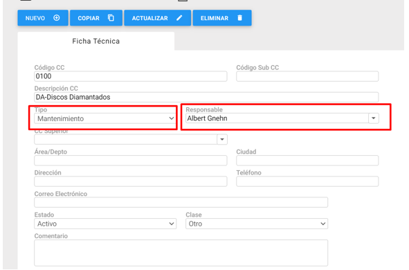
- Los usuarios de AMsi realizaran la solicitud de forma habitual.

- El sistema relacionara automáticamente el Responsable del Centro de Costo al cual llega la solicitud como el Responsable de la Solicitud creada.

- El sistema enviara automaticamente un correo al email registrado del Responsable.

MODULO DE INFRAESTRUCTURA
CONTRATOS
- Se permite a los Usuarios definir si el Contrato se destina al Consumo de Combustibles, de ser así llevara el Control de Gasto del contrato según las relaciones realizadas en el módulo de Consumo de Combustibles.

- Se crea un Indicador para los contratos que estén definidos para Combustibles.

TERCEROS
- Se amplia el tamaño del campo email para permitir hasta 100 caracteres.

UNIDAD DE MEDIDA
- El usuario puede definir si la Unidad de Medida se debe listar en para la relación con Combustibles
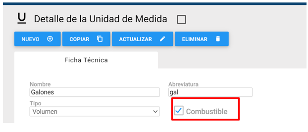
COMBUSTIBLES
- El usuario debe definir los tipos de Combustibles que se relacionaran en las Consumos de Combustibles.

- En esta opción se listarán los Tipos de Combustible que el usuario defina.
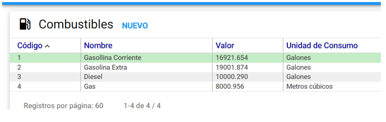
- En el detalle del Combustible se debe definir, el nombre, el valor y la unidad de medida que se relacionaran a este tipo de combustible.

MODULO DE ACTIVOS
- Se adiciona el campo Fecha de Vencimiento para el Registro Invima

- Se desarrolla el reporte ACU-MYMO – Resumen de Activos con Marca y Modelo; el cual adiciona el valor de la característica técnica Consumo Energía.
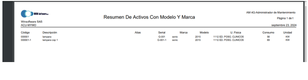
MODULO DE KARDEX
- Se adiciona la Columna Familia al Pop-UP para seleccionar los Materiales y Repuestos.

- Se desarrolla el reporte KXU-IDCC – Informe Detallado Por Centro de Costo. El cual adiciona los campos de Recibido y Fecha al Detalle del registro y el Total de Cantidad al resumen de Centro de Costo.

MODULO DE COMBUSTIBLES
- El usuario administrador define si la Compañía registra el Consumo de Combustibles

- Los usuarios podrán ver e interactuar con el módulo de Consumo de Combustibles

- La grilla listara los consumos registrados con su consecutivos, referencia, vehículo relacionado, fecha de consumo, conductor, tipo de combustible, cantidad, valor y contrato.

- En el detalle el usuario debe registrar el vale de consumo, el contrato relacionado, la referencia, el vehículo relacionado, fecha de consumo, conductor, tipo de combustible, cantidad y valor

- Se permite a los usuarios usar filtros de búsqueda por: Atributos del Activo/Vehículo, vale, fecha de consumo, conductor, contrato y referencia.

- El usuario puede exportar la grilla con las opciones de Referencia, Cod. Activo, Desc. Activo, conductor, fecha de consumo, tipo, cantidad, valor, total, kilómetros y contrato.
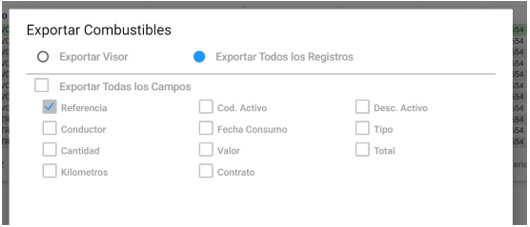
- Se genera el reporte CMR-RPT – Resumen de Consumos de Combustible, el cual dará un resumen del consumo de combustible agrupado por Vehículo y meses, mostrando un total de Consumo en base a estas relaciones.

MODULO DE SOLICITUDES
- Se consulta al usuario al momento de cerrar la solicitud con OT, si desea que esta lleve Control presupuestal.

- Se adiciona la validación para que el sistema no permita Cerrar una solicitud como Cerrada no Ejecutada; si esta no tiene un activo real relacionado.
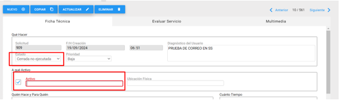
- Se adiciona el Indicador de Firma de Técnico a la grilla de Solicitudes.

MODULO ORDENES DE TRABAJO
- Se adiciona el campo De Técnico Externo a las Ordenes de Trabajo, este técnico esta relacionado a los Terceros Externos seleccionados como Responsables de la Orden de Trabajo, según los técnicos registrados a este Tercero.
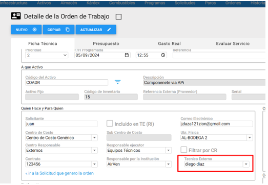
- Se adiciona el Indicador de Firma de Técnico a la grilla de Ordenes de Trabajo

- Se adiciona el reporte OTU-MPICAT – Detalle Orden De Trabajo Pre-Ejecución con Acciones Técnicas.

MODULO DE HISTORIA
- Se adiciona el campo De Técnico Externo a las Ordenes de Trabajo, este técnico está relacionado a los Terceros Externos seleccionados como Responsables de la Orden de Trabajo, según los técnicos registrados a este Tercero.
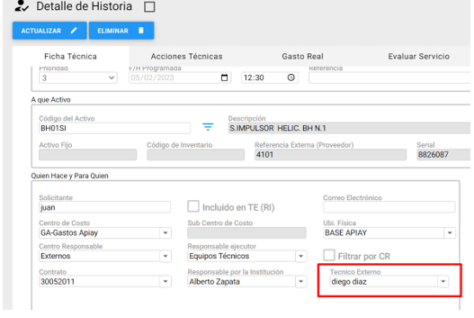
- Se adiciona el Indicador de Firma de Técnico a la grilla de Historia.

- Se adicionan nuevo Submódulo en Historia con Indicadores gráficos.

Total actividades por tipo de registro.
- Muestra la cantidad de actividades clasificadas según su tipo de registro, lo que facilita el análisis del uso de diferentes registros.

Total de actividades de un periodo clasificadas por estado en historia.
- Presenta las actividades realizadas en un periodo específico, clasificadas por su estado en el historial.

Total de actividades agrupadas por estados .
- Agrupa las actividades de acuerdo con su estado actual, proporcionando una visión clara de la distribución de las actividades según su avance.

Total de actividades agrupadas por centro de costo.
- Clasifica las actividades según los diferentes centros de costo, mostrando la carga de trabajo asignada a cada uno.

Total de actividades agrupadas por centros responsables .
- Muestra la cantidad total de actividades gestionadas por los diferentes centros responsables, ayudando a identificar áreas de alta o baja actividad.

Actividades del responsable por centro responsable
- Detalla las actividades asignadas a cada responsable dentro de un centro, permitiendo un análisis más específico de la distribución del trabajo.

Total de solicitudes clasificadas por estados.
- Presenta el total de solicitudes, organizadas por su estado actual, facilitando el monitoreo de solicitudes en diferentes fases del proceso.

Total de ordenes generadas desde Solicitudes.
- Muestra la cantidad total de órdenes que se han generado a partir de solicitudes, lo que permite evaluar la efectividad del flujo de trabajo desde la solicitud hasta la orden.

Total de órdenes.
- Proporciona una vista general del total de órdenes generadas, sin distinción de periodo o estado.

Total de órdenes del mes actual.
- Presenta el número total de órdenes generadas durante el mes actual, proporcionando un indicador del rendimiento mensual.

Total de órdenes meses anteriores
- Muestra el número total de órdenes generadas en meses previos, facilitando el análisis comparativo con el mes actual.

Total de actividades agrupadas por tipo de mantenimiento.
- Clasifica las actividades según el tipo de mantenimiento (preventivo, correctivo, etc.), mostrando la proporción de cada uno.

Total de ordenes clasificadas por tipo de mantenimiento.
- Presenta las órdenes agrupadas por su tipo de mantenimiento, permitiendo analizar las prioridades y enfoques en el trabajo.

Periodo de ordenes por TM
- Muestra las órdenes realizadas durante diferentes periodos, clasificadas por tipo de mantenimiento, lo que permite observar tendencias a lo largo del tiempo.

**Periodo de ordenes por TM en historia **
- Proporciona una visión histórica de las órdenes generadas por tipo de mantenimiento, permitiendo un análisis detallado del desempeño en distintos periodos

**Se adicionan nuevo Submódulo en Historia con Indicadores de Eficiencia por Tipo de Mantenimiento. **

Total de ordenes preventivas clasificadas por estados en ordenes e historia.
- Muestra el total de órdenes preventivas, organizadas según su estado actual y su historial, lo que permite evaluar el seguimiento y la finalización de tareas preventivas.

Total de ordenes preventivas ejecutadas.
- Presenta el número total de órdenes preventivas que han sido completadas, proporcionando una visión clara de la eficiencia en la ejecución de estas tareas.

Total de actividades correctivas clasificadas por estado.
- Clasifica las actividades correctivas según su estado, destacando el progreso y la resolución de problemas operacionales.

Total de actividades correctivas ejecutadas clasificadas por estado.
- Muestra las actividades correctivas que han sido completadas, organizadas por estado, lo que permite analizar la eficiencia en la respuesta a correcciones necesarias

MODULO DE ADMINSITRACION
- El usuario administrador debe definir si las Ordenes creadas desde AMovil tienen o no Control Presupuestal.
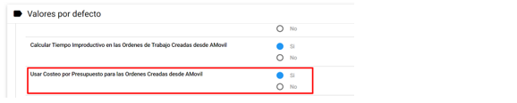
- El usuario administrador debe definir si los técnicos en AMovil pueden o no Modificar los activos y el responsable de las Solicitudes de Servicio
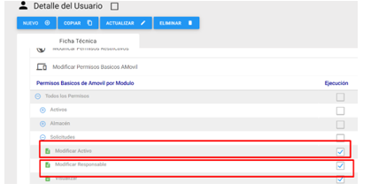
- El usuario administrador debe definir si los técnicos en AMovil pueden o no Modificar los activos y el responsable de las Ordenes de Trabajo.

- El usuario administrador puede definir por Compañía el mensaje de contacto que se enviara en las notificaciones por correo.

NUEVOS DISEÑOS DE LAS NOTIFICACIONES POR CORREO ELECTRONICO
Creación de la Solicitud
Este correo se envía al solicitante cuando se crea una nueva solicitud de servicio.

Asignación de la Solicitud
- Este correo se envía al solicitante cuando se asigna un responsable a la solicitud de servicio.

Modificación de la Solicitud
- Este correo se envía al solicitante cuando se modifica el estado de la solicitud.

Cierre de la Solicitud
- Este correo se envía al solicitante cuando se cierra una solicitud.
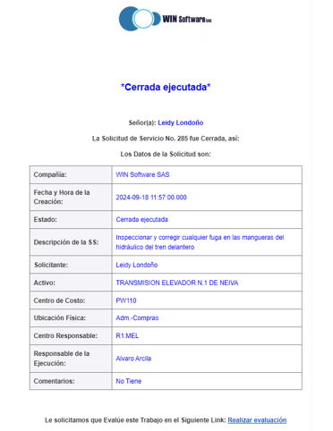
Cierre de la Solicitud con OT
- Este correo se envía al solicitante cuando se cierra la solicitud de servicio con OT.

Comentario a la Solicitud
- Este correo se envía al solicitante cuando se anexa un comentario a la solicitud de servicio.

Asignación de la Solicitud
- Este correo se envía al responsable cuando se le asigna una solicitud de servicio.

Modificación de la Solicitud
- Este correo se envía al responsable cuando se modifica el estado de la solicitud de servicio.

Cierre de la Solicitud
- Este correo se envía al responsable cuando se cierra una solicitud de servicio.

Cierre de la Solicitud con OT
- Este correo se envía al responsable cuando se cierra la solicitud de servicio con OT.

Creación de la Orden
- Este correo se envía al solicitante cuando se crea la orden de trabajo.

Asignación de la orden
- Este correo se envía al solicitante cuando se asigna un responsable a la orden de trabajo.

Modificación de la Orden
- Este correo se envía al solicitante cuando se modifica el estado de la orden de trabajo.

Cierre de la Orden
- Este correo se envía al solicitante cuando se cierra una orden de trabajo.

Comentario de la Orden
- Este correo se le envía al solicitante cuando se anexa un comentario a la orden de trabajo.

Asignación de la Orden
- Este correo se envía cuando se asigna un responsable a la orden de trabajo.

Modificación de la Orden
- Este correo se envía al responsable cuando se modifica el estado de la orden de trabajo.

Cierre de la Orden
- Este correo se envía al responsable cuando se cierra una orden de trabajo.


 8
8


 (../assets/
(../assets/
 (../assets/
(../assets/ (../assets/
(../assets/ (../assets/
(../assets/ (../assets/
(../assets/